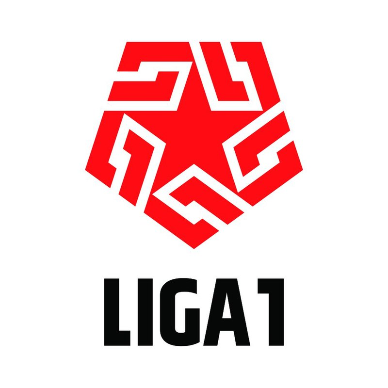
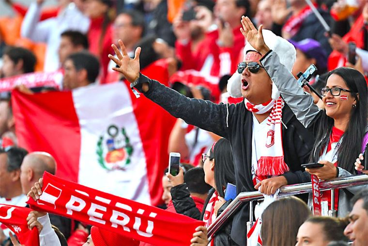
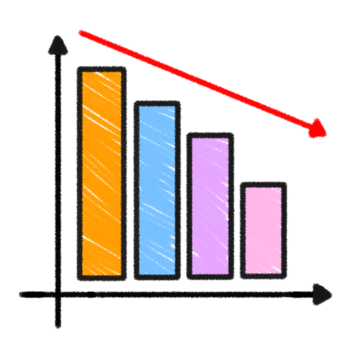

"StatsPeru" es la página de referencia definitiva para todos los apasionados del fútbol peruano. Con un enfoque dedicado en ofrecer estadísticas precisas y detalladas de las competiciones de fútbol en Perú, esta plataforma se ha convertido en el lugar de encuentro para los fanáticos, analistas y entusiastas del deporte en el país.
La visión de "Stats Peru" es convertirse en la plataforma líder y de referencia indiscutible para todos los amantes del fútbol peruano, proporcionando estadísticas precisas y datos relevantes que enriquezcan la experiencia de los aficionados y contribuyan al crecimiento y desarrollo continuo del fútbol en el país.
La misión de "Stats Peru" es la de proporcionar información precisa, detallada y actualizada sobre el fútbol peruano, enriqueciendo la experiencia de los aficionados, los analistas y todos los interesados en el deporte
